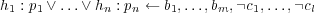

cplint Manual
Fabrizio Riguzzi
fabrizio.riguzzi@unife.it
October 10, 2011
1 Introduction
cplint is a suite of programs for reasoning with ICL [13], LPADs [22, 23] and
CP-logic programs [20, 21]. It contains programs both for inference and
learning.
2 Installation
cplint is distributed in source code in the source code development tree of Yap. It
includes Prolog and C files. Download it by following the instruction in
http://www.ncc.up.pt/ vsc/Yap/downloads.html .
cplint requires CUDD . You can download CUDD from
ftp://vlsi.colorado.edu/pub/cudd-2.4.2.tar.gz .
Compile CUDD:
- decompress cudd-2.4.2.tar.gz
- cd cudd-2.4.2
- see the README file for instructions on compilation
Install Yap together with cplint: when compiling Yap following the instruction of
the INSTALL file in the root of the Yap folder, use
configure --enable-cplint=DIR
where DIR is the directory where CUDD is, i.e., the directory ending with
cudd-2.4.2. Under Windows, you have to use Cygwin (CUDD does not compile
under MinGW), so
configure --enable-cplint=DIR --enable-cygwin
After having performed make install you can do make installcheck that will
execute a suite of tests of the various programs. If no error is reported you have a
working installation of cplint.
3 Syntax
LPAD and CP-logic programs consist of a set of annotated disjunctive clauses.
Disjunction in the head is represented with a semicolon and atoms in the head are
separated from probabilities by a colon. For the rest, the usual syntax of Prolog is
used. For example, the CP-logic clause
 is
represented by
h1:p1 ; ... ; hn:pn :- b1,...,bm,\+ c1,....,\+ cl
No parentheses are necessary. The pi are numeric expressions. It is up to the user to
ensure that the numeric expressions are legal, i.e. that they sum up to less than
one.
If the clause has an empty body, it can be represented like this
h1:p1 ; ... ;hn:pn.
If the clause has a single head with probability 1, the annotation can be omitted and
the clause takes the form of a normal prolog clause, i.e.
h1:- b1,...,bm,\+ c1,...,\+ cl.
stands for
h1:1 :- b1,...,bm,\+ c1,...,\+ cl.
The coin example of [23] is represented as (see file coin.cpl)
heads(Coin):1/2 ; tails(Coin):1/2:-
toss(Coin),\+biased(Coin).
heads(Coin):0.6 ; tails(Coin):0.4:-
toss(Coin),biased(Coin).
fair(Coin):0.9 ; biased(Coin):0.1.
toss(coin).
The first clause states that if we toss a coin that is not biased it has equal
probability of landing heads and tails. The second states that if the coin is biased it
has a slightly higher probability of landing heads. The third states that the coin is
fair with probability 0.9 and biased with probability 0.1 and the last clause states
that we toss a coin with certainty.
Moreover, the bodies of rules can contain the built-in predicates:
is/2, >/2, </2, >=/2 ,=</2,
=:=/2, =\=/2, true/0, false/0,
=/2, ==/2, \=/2 ,\==/2, length/2
The bodies can also contain the following library predicates:
member/2, max_list/2, min_list/2
nth0/3, nth/3
plus the predicate
average/2
that, given a list of numbers, computes its arithmetic mean.
The syntax of ICL program is the one used by the AILog 2 system.
4 Inference
cplint contains various modules for answering queries.
These modules answer queries using using goal-oriented procedures:
- lpadsld.pl: uses the top-down procedure described in in [14] and [15]. It
is based on SLDNF resolution and is an adaptation of the interpreter for
ProbLog [9].
It was proved correct [15] with respect to the semantics of LPADs for
range restricted acyclic programs [1] without function symbols.
It is also able to deal with extensions of LPADs and CP-logic: the clause
bodies can contain setof and bagof, the probabilities in the head may
be depend on variables in the body and it is possible to specify a uniform
distribution in the head with reference to a setof or bagof operator.
These extended features have been introduced in order to represent
CLP(BN) [19] programs and PRM models [12]: setof and bagof allow to
express dependency of an attribute from an aggregate function of another
attribute, as in CLP(BN) and PRM, while the possibility of specifying a
uniform distribution allows the use of the reference uncertainty feature of
PRM.
- picl.pl: performs inference on ICL programs [16]
- lpad.pl: uses a top-down procedure based on SLG resolution [8]. As a
consequence, it works for any sound LPADs, i.e., any LPAD such that
each of its instances has a two valued well founded model.
- cpl.pl: uses a top-down procedure based on SLG resolution and moreover
checks that the CP-logic program is valid, i.e., that it has at least an
execution model.
- Modules for approximate inference:
- deepit.pl performs iterative deepening [7]
- deepdyn.pl performs dynamic iterative deepening [7]
- bestk.pl performs k-Best [7]
- bestfirst.pl performs best first [7]
- montecarlo.pl performs Monte Carlo [7]
- mcintyre.pl: implements the algorithm MCINTYRE (Monte Carlo
INference wiTh Yap REcord) [17]
- approx/exact.pl as lpadsld.pl but uses SimplecuddLPADs, a modification
of the Simplecudd instead of the cplint library for building BDDs and
computing the probability.
These modules answer queries using the definition of the semantics of LPADs and
CP-logic:
- semlpadsld.pl: given an LPAD P, it generates all the instances of P.
The probability of a query Q is computed by identifying all the instances
where Q is derivable by SLDNF resolution.
- semlpad.pl: given an LPAD P, it generates all the instances of P. The
probability of a query Q is computed by identifying all the instances where
Q is derivable by SLG resolution.
- semlcpl.pl: given an LPAD P, it builds an execution model of P, i.e.,
a probabilistic process that satisfy the principles of universal causation,
sufficient causation, independent causation, no deus ex machina events
and temporal precedence. It uses the definition of the semantics given in
[21].
4.1 Commands
The LPAD or CP-logic program must be stored in a text file with extension .cpl.
Suppose you have stored the example above in file coin.cpl. In order to answer
queries from this program, you have to run Yap, load one of the modules (such as for
example lpad.pl) by issuing the command
use_module(library(lpad)).
at the command prompt. Then you must parse the source file coin.cpl with the
command
p(coin).
if coin.cpl is in the current directory, or
p(’path_to_coin/coin’).
if coin.cpl is in a different directory. At this point you can pose query to the
program by using the predicate s/2 (for solve) that takes as its first argument a
conjunction of goals in the form of a list and returns the computed probability
as its second argument. For example, the probability of the conjunction
head(coin),biased(coin) can be asked with the query
s([head(coin),biased(coin)],P).
For computing the probability of a conjunction given another conjunction you can
use the predicate sc/3 (for solve conditional) that take takes as input the query
conjunction as its first argument, the evidence conjunction as its second argument
and returns the probability in its third argument. For example, the probability of the
query heads(coin) given the evidence biased(coin) can be asked with the
query
sc([heads(coin)],[biased(coin)],P).
After having parsed a program, in order to read in a new program you must restart
Yap when using semlpadsld.pl and semlpad.pl. With the other modules, you can
directly parse a new program.
When using lpad.pl, the system can print the message “Uunsound program” in
the case in which an instance with a three valued well founded model is found.
Moreover, it can print the message “It requires the choice of a head atom from a non
ground head”: in this case, in order to answer the query, all the groundings of the
culprit clause must be generated, which may be impossible for programs with
function symbols.
When using semcpl.pl, you can print the execution process by using the
command print. after p(file). Moreover, you can build an execution
process given a context by issuing the command parse(file). and then
build(context). where context is a list of atoms that are true in the context.
semcpl.pl can print “Invalid program” in the case in which no execution process
exists.
When using cpl.pl you can print a partial execution model including all the
clauses involved in the query issued with print. cpl.pl can print the messages
“Uunsound program”, “It requires the choice of a head atom from a non ground
head” and “Invalid program”.
For approx/deepit.pl and approx/deepdyn.pl the command
solve(GoalsList, ProbLow, ProbUp, ResTime, BddTime)
takes as input a list of goals GoalsList and returns a lower bound on the
probability ProbLow, an upper bound on the probability ProbUp, the CPU time spent
on performing resolution ResTime and the CPU time spent on handling BDDs
BddTime.
For approx/bestk.pl the command
solve(GoalsList, ProbLow, ResTime, BddTime)
takes as input a list of goals GoalsList and returns a lower bound on the
probability ProbLow, the CPU time spent on performing resolution ResTime and the
CPU time spent on handling BDDs BddTime.
For approx/bestfirst.pl the command
solve(GoalsList, ProbLow, ProbUp, Count, ResTime, BddTime)
takes as input a list of goals GoalsList and returns a lower bound on the
probability ProbLow, an upper bound on the probability ProbUp, the number of
BDDs generated by the algorithm Count, the CPU time spent on performing
resolution ResTime and the CPU time spent on handling BDDs BddTime.
For approx/montecarlo.pl the command
solve(GoalsList, Samples, Time, Low, Prob, Up)
takes as input a list of goals GoalsList and returns the number of samples taken
Samples, the time required to solve the problem Time, the lower end of the
confidence interval Lower, the estimated probability Prob and the upper end of the
confidence interval Up.
For mcintyre.pl: the command
solve(Goals, Samples, CPUTime, WallTime, Lower, Prob, Upper) :-
takes as input a conjunction of goals Goals and returns the number of samples taken
Samples, the CPU time required to solve the problem CPUTime, the wall time
required to solve the problem CPUTime, the lower end of the confidence interval
Lower, the estimated probability Prob and the upper end of the confidence interval
Up.
For approx/exact.pl the command
solve(GoalsList, Prob, ResTime, BddTime)
takes as input a conjunction of goals Goals and returns the probability Prob, the
CPU time spent on performing resolution ResTime and the CPU time spent on
handling BDDs BddTime.
4.1.1 Parameters
The modules make use of a number of parameters in order to control their behavior.
They that can be set with the command
set(parameter,value).
from the Yap prompt after having loaded the module. The current value can be read
with
setting(parameter,Value).
from the Yap prompt. The available parameters are:
- epsilon_parsing (valid for all modules): if (1 - the sum of the
probabilities of all the head atoms) is smaller than epsilon_parsing then
cplint adds the null events to the head. Default value 0.00001
- save_dot (valid for all goal-oriented modules): if true a graph representing the
BDD is saved in the file cpl.dot in the current directory in dot format. The
variables names are of the form Xn_m where n is the number of the multivalued
variable and m is the number of the binary variable. The correspondence
between variables and clauses can be evinced from the message printed on the
screen, such as
Variables: [(2,[X=2,X1=1]),(2,[X=1,X1=0]),(1,[])]
where the first element of each couple is the clause number of the input file
(starting from 1). In the example above variable X0 corresponds to clause 2
with the substitutions X=2,X1=1, variable X1 corresponds to clause 2 with the
substitutions X=1,X1=0 and variable X2 corresponds to clause 1 with the
empty substitution. You can view the graph with graphviz using the
command
dotty cpl.dot &
- ground_body: (valid for lpadsld.pl and all semantic modules) determines how
non ground clauses are treated: if true, ground clauses are obtained from a non
ground clause by replacing each variable with a constant, if false, ground
clauses are obtained by replacing only variables in the head with a
constant. In the case where the body contains variables not in the
head, setting it to false means that the body represents an existential
event.
- min_error: (valid for approx/deepit.pl, approx/deepdyn.pl,
approx/bestk.pl, approx/bestfirst.pl, approx/montecarlo.pl and
mcintyre.pl) is the threshold under which the difference between
upper and lower bounds on probability must fall for the algorithm to
stop.
- k: maximum number of explanations for approx/bestk.pl and
approx/bestfirst.pl and number of samples to take at each iteration for
approx/montecarlo.pl and mcintyre.pl
- prob_bound: (valid for approx/deepit.pl, approx/deepdyn.pl,
approx/bestk.pl and approx/bestfirst.pl) is the initial bound on the
probability of explanations when iteratively building explanations
- prob_step: (valid for approx/deepit.pl, approx/deepdyn.pl,
approx/bestk.pl and approx/bestfirst.pl) is the increment on the
bound on the probability of explanations when iteratively building
explanations
- timeout: (valid for approx/deepit.pl, approx/deepdyn.pl, approx/bestk.pl,
approx/bestfirst.pl and approx/exact.pl) timeout for builduing
BDDs
4.2 Semantic Modules
The three semantic modules need to produce a grounding of the program in order to
compute the semantics. They require an extra file with extension .uni (for universe)
in the same directory where the .cpl file is.
There are two ways to specify how to ground a program. The first consists in
providing the list of constants to which each variable can be instantiated. For
example, in our case the current directory will contain a file coin.uni that is a
Prolog file containing facts of the form
universe(var_list,const_list).
where var_list is a list of variables names (each must be included in single quotes)
and const_list is a list of constants. The semantic modules generate the grounding
by instantiating in all possible ways the variables of var_list with the constants of
const_list. Note that the variables are identified by name, so a variable with
the same name in two different clauses will be instantiated with the same
constants.
The other way to specify how to ground a program consists in using mode and
type information. For each predicate, the file .uni must contain a fact of the
form
mode(predicate(t1,...,tn)).
that specifies the number and types of each argument of the predicate. Then, the list
of constants that are in the domain of each type ti must be specified with a fact of
the form
type(ti,list_of_constants).
The file .uni can contain both universe and mode declaration, the ones to be used
depend on the value of the parameter grounding: with value variables, the
universe declarations are used, with value modes the mode declarations are
used.
With semcpl.pl only mode declarations can be used.
4.3 Extensions
In this section we will present the extensions to the syntax of LPADs and CP-logic
programs that lpadsld can handle.
When using lpadsld.pl, the bodies can contain the predicates setof/3 and
bagof/3 with the same meaning as in Prolog. Existential quantifiers are allowed in
both, so for example the query
setof(Z, (term(X,Y))^foo(X,Y,Z), L).
returns all the instantiations of Z such that there exists an instantiation of X and Y
for which foo(X,Y,Z) is true.
An example of the use of setof and bagof is in the file female.cpl:
male(C):M/P ; female(C):F/P:-
person(C),
setof(Male,known_male(Male),LM),
length(LM,M),
setof(Female,known_female(Female),LF),
length(LF,F),
P is F+M.
person(f).
known_female(a).
known_female(b).
known_female(c).
known_male(d).
known_male(e).
The disjunctive rule expresses the probability of a person of unknown sex of being
male or female depending on the number of males and females that are known. This
is an example of the use of expressions in the probabilities in the head that depend
on variables in the body. The probabilities are well defined because they always sum
to 1 (unless P is 0).
Another use of setof and bagof is to have an attribute depend on an
aggregate function of another attribute, similarly to what is done in PRM and
CLP(BN).
So, in the classical school example (available in student.cpl) you can find the
following clauses:
student_rank(S,h):0.6 ; student_rank(S,l):0.4:-
bagof(G,R^(registr_stu(R,S),registr_gr(R,G)),L),
average(L,Av),Av>1.5.
student_rank(S,h):0.4 ; student_rank(S,l):0.6:-
bagof(G,R^(registr_stu(R,S),registr_gr(R,G)),L),
average(L,Av),Av =< 1.5.
where registr_stu(R,S) expresses that registration R refers to student S and
registr_gr(R,G) expresses that registration R reports grade G which is a natural
number. The two clauses express a dependency of the rank of the student from the
average of her grades.
Another extension can be used with lpadsld.pl in order to be able to represent
reference uncertainty of PRMs. Reference uncertainty means that the link structure
of a relational model is not fixed but is uncertain: this is represented by having the
instance referenced in a relationship be chosen uniformly from a set. For example,
consider a domain modeling scientific papers: you have a single entity, paper, and a
relationship, cites, between paper and itself that connects the citing paper to the
cited paper. To represent the fact that the cited paper and the citing paper are
selected uniformly from certain sets, the following clauses can be used (see file
paper_ref_simple.cpl):
uniform(cites_cited(C,P),P,L):-
bagof(Pap,paper_topic(Pap,theory),L).
uniform(cites_citing(C,P),P,L):-
bagof(Pap,paper_topic(Pap,ai),L).
The first clauses states that the paper P cited in a citation C is selected
uniformly from the set of all papers with topic theory. The second clauses
expresses that the citing paper is selected uniformly from the papers with topic
ai.
These clauses make use of the predicate
uniform(Atom,Variable,List)
in the head, where Atom must contain Variable. The meaning is the following:
the set of all the atoms obtained by instantiating Variable of Atom with a
term taken from List is generated and the head is obtained by having a
disjunct for each instantiation with probability 1∕N where N is the length of
List.
A more elaborate example is present in file paper_ref.cpl:
uniform(cites_citing(C,P),P,L):-
setof(Pap,paper(Pap),L).
cites_cited_group(C,theory):0.9 ; cites_cited_group(C,ai):0.1:-
cites_citing(C,P),paper_topic(P,theory).
cites_cited_group(C,theory):0.01;cites_cited_group(C,ai):0.99:-
cites_citing(C,P),paper_topic(P,ai).
uniform(cites_cited(C,P),P,L):-
cites_cited_group(C,T),bagof(Pap,paper_topic(Pap,T),L).
where the cited paper depends on the topic of the citing paper. In particular, if the
topic is theory, the cited paper is selected uniformly from the papers about theory
with probability 0.9 and from the papers about ai with probability 0.1. if
the topic is ai, the cited paper is selected uniformly from the papers about
theory with probability 0.01 and from the papers about ai with probability
0.99.
PRMs take into account as well existence uncertainty, where the existence of
instances is also probabilistic. For example, in the paper domain, the total number of
citations may be unknown and a citation between any two paper may have a
probability of existing. For example, a citation between two paper may be more
probable if they are about the same topic:
cites(X,Y):0.005 :-
paper_topic(X,theory),paper_topic(Y,theory).
cites(X,Y):0.001 :-
paper_topic(X,theory),paper_topic(Y,ai).
cites(X,Y):0.003 :-
paper_topic(X,ai),paper_topic(Y,theory).
cites(X,Y):0.008 :-
paper_topic(X,ai),paper_topic(Y,ai).
This is an example where the probabilities in the head do not sum up to one so the
null event is automatically added to the head. The first clause states that, if the topic
of a paper X is theory and of paper Y is theory, there is a probability of 0.005 that
there is a citation from X to Y. The other clauses consider the remaining cases for the
topics.
4.4 Files
In the directory where Yap keeps the library files (usually /usr/local/share/ Yap)
you can find the directory cplint that contains the files:
5 Learning
cplint contains the following learning algorithms:
- CEM (cplint EM): an implementation of EM for learning parameters
that is based on lpadsld.pl [18]
- RIB (Relational Information Bottleneck): an algorithm for learning
parameters based on the Information Bottleneck [18]
- EMBLEM (EM over Bdds for probabilistic Logic programs Efficient
Mining): an implementation of EM for learning parameters that computes
expectations directly on BDDs [5, 2, 3]
- SLIPCASE (Structure LearnIng of ProbabilistiC logic progrAmS with Em
over bdds): an algorithm for learning the structure of program that is
based on EMBLEM [4]
5.1 Input
To execute the learning algorithms, prepare four files in the same folder:
- <stem>.kb: contains the example interpretations
- <stem>.bg: contains the background knowledge, i.e., knowledge valid for
all interpretations
- <stem>.l: contains language bias information
- <stem>.cpl: contains the LPAD for you which you want to learn the
parameters or the initial LPAD for SLIPCASE
where <stem> is your dataset name. Examples of these files can be found in the dataset
pages.
In <stem>.kb the example interpretations have to be given as a list of Prolog
facts initiated by begin(model(<name>)). and terminated by end(model(<name>)).
as in
begin(model(b1)).
sameperson(1,2).
movie(f1,1).
movie(f1,2).
workedunder(1,w1).
workedunder(2,w1).
gender(1,female).
gender(2,female).
actor(1).
actor(2).
end(model(b1)).
The interpretations may contain a fact of the form
prob(0.3).
assigning a probability (0.3 in this case) to the interpretations. If this is omitted, the
probability of each interpretation is considered equal to 1∕n where n is the total
number of interpretations. prob/1 can be used to set different multiplicity for the
different interpretations.
In order for RIB to work, the input interpretations must share the Herbrand
universe. If this is not the case, you have to translate the interpretations in this was,
see for example the sp1 files in RIB’s folder, that are the results of the conversion of
the first fold of the IMDB dataset.
<stem>.bg can contain Prolog clauses that can be used to derive additional
conclusions from the atoms in the interpretations.
<stem>.l contains the declarations of the input and output predicates, of the
unseen predicates and the commands for setting the algorithms’ parameters. Output
predicates are declared as
output(<predicate>/<arity>).
and define the predicates whose atoms in the input interpretations are used as the
goals for the prediction of which you want to optimize the parameters. Derivations
for these goals are built by the systems.
Input predicates are those for the predictions of which you do not want to
optimize the parameters. You can declare closed world input predicates
with
input_cw(<predicate>/<arity>).
For these predicates, the only true atoms are those in the interpretations, the
clauses in the input program are not used to derive atoms not present in the
interpretations.
Open world input predicates are declared with
input(<predicate>/<arity>).
In this case, if a subgoal for such a predicate is encountered when deriving the atoms
for the output predicates, both the facts in the interpretations and the clauses of the
input program are used.
For RIB, if there are unseen predicates, i.e., predicates that are present in the
input program but not in the interpretations, you have to declare them
with
unseen(<predicate>/<arity>).
For SLIPCASE, you have to specify the language bias by means of mode
declarations in the style of Progol .
modeh(<recall>,<predicate>(<arg1>,...).
specifies the atoms that can appear in the head of clauses, while
modeb(<recall>,<predicate>(<arg1>,...).
specifies the atoms that can appear in the body of clauses. <recall> can be an
integer or * (currently unused).
The arguments are of the form
+<type>
for specifying an input variable of type <type>, or
-<type>
for specifying an output variable of type <type>. or
<constant>
for specifying a constant.
5.2 Parameters
In order to set the algorithms’ parameters, you have to insert in <stem>.l commands
of the form
:- set(<parameter>,<value>).
The available parameters are:
- depth (values: integer or inf, default value: 3): depth of derivations if
depth_bound is set to true
- single_var (values: {true,false}, default value: false, valid for CEM,
EMBLEM and SLIPCASE): if set to true, there is a random variable for
each clauses, instead of a separate random variable for each grounding of
a clause
- sample_size (values: integer, default value: 1000): total number of
examples in case in which the models in the .kb file contain a prob(P).
fact. In that case, one model corresponds to sample_size*P examples
- epsilon_em (values: real, default value: 0.1, valid for CEM, EMBLEM
and SLIPCASE): if the difference in the log likelihood in two successive
EM iteration is smaller than epsilon_em, then EM stops
- epsilon_em_fraction (values: real, default value: 0.01, valid for CEM,
EMBLEM and SLIPCASE): if the difference in the log likelihood in two
successive EM iteration is smaller than epsilon_em_fraction*(-current
log likelihood), then EM stops
- iter (values: integer, defualt value: 1, valid for EMBLEM and
SLIPCASE): maximum number of iteration of EM parameter learning. If
set to -1, no maximum number of iterations is imposed
- iterREF (values: integer, defualt value: 1, valid for SLIPCASE): maximum
number of iteration of EM parameter learning for refinements. If set to -1,
no maximum number of iterations is imposed.
- random_restarts_number (values: integer, default value: 1, valid for
CEM, EMBLEM and SLIPCASE): number of random restarts of EM
learning
- random_restarts_REFnumber (values: integer, default value: 1, valid for
SLIPCASE): number of random restarts of EM learning for refinements
- setrand (values: rand(integer,integer,integer)): seed for the random
functions, see Yap manual for allowed values
- minimal_step (values: [0,1], default value: 0.005, valid for RIB): minimal
increment of γ
- maximal_step (values: [0,1], default value: 0.1, valid for RIB): maximal
increment of γ
- logsize_fraction (values: [0,1], default value 0.9, valid for RIB): RIB
stops when I(CH,T;Y ) is above logsize_fraction times its maximum
value (log |CH,T|, see [10])
- delta (values: negative integer, default value -10, valid for RIB): value
assigned to log 0
- epsilon_fraction (values: integer, default value 100, valid for RIB):
in the computation of the step, the value of ϵ of [10] is obtained as
log |CH,T|×epsilon_fraction
- max_rules (values: integer, default value: 6000, valid for RIB and
SLIPCASE): maximum number of ground rules. Used to set the size of
arrays for storing internal statistics. Can be increased as much as memory
allows.
- logzero (values: negative real, default value log(0.000001), valid for
SLIPCASE): value assigned to log 0
- examples (values: atoms,interpretations, default value atoms, valid for
SLIPCASE): determines how BDDs are built: if set to interpretations,
a BDD for the conjunction of all the atoms for the target predicates in each
interpretations is built. If set to atoms, a BDD is built for the conjunction
of a group of atoms for the target predicates in each interpretations. The
number of atoms in each group is determined by the parameter group
- group (values: integer, default value: 1, valid for SLIPCASE): number of
target atoms in the groups that are used to build BDDs
- nax_iter (values: integer, default value: 10, valid for SLIPCASE): number
of interations of beam search
- max_var (values: integer, default value: 1, valid for SLIPCASE): maximum
number of distinct variables in a clause
- verbosity (values: integer in [1,3], default value: 1): level of verbosity of
the algorithms
- beamsize (values: integer, default value: 20, valid for SLIPCASE): size of
the beam in SLIPCASE
5.3 Commands
To execute CEM, load em.pl with
?:- use_module(library(’cplint/em’)).
and call:
?:- em(stem).
To execute RIB, load rib.pl with
?:- use_module(library(’cplint/rib’)).
and call:
?:- ib_par(stem).
To execute EMBLEM, load slipcase.pl with
?:- use_module(library(’cplint/slipcase’)).
and call
?:- em(stem).
To execute SLIPCASE, load slipcase.pl with
?:- use_module(library(’cplint/slipcase’)).
and call
?:- sl(stem).
6 License
cplint, as Yap, follows the Artistic License 2.0 that you can find in Yap CVS root
dir. The copyright is by Fabrizio Riguzzi.
The modules in the approx subdirectory use SimplecuddLPADs, a modification of
the Simplecudd library whose copyright is by Katholieke Universiteit Leuven and
that follows the Artistic License 2.0.
Some modules use the library CUDD for manipulating BDDs that is included in
glu. For the use of CUDD, the following license must be accepted:
Copyright (c) 1995-2004, Regents of the University of Colorado
All rights reserved.
Redistribution and use in source and binary forms, with or without modification,
are permitted provided that the following conditions are met:
- Redistributions of source code must retain the above copyright notice, this
list of conditions and the following disclaimer.
- Redistributions in binary form must reproduce the above copyright notice,
this list of conditions and the following disclaimer in the documentation
and/or other materials provided with the distribution.
- Neither the name of the University of Colorado nor the names of its
contributors may be used to endorse or promote products derived from
this software without specific prior written permission.
THIS SOFTWARE IS PROVIDED BY THE COPYRIGHT HOLDERS
AND CONTRIBUTORS ”AS IS” AND ANY EXPRESS OR IMPLIED
WARRANTIES, INCLUDING, BUT NOT LIMITED TO, THE IMPLIED
WARRANTIES OF MERCHANTABILITY AND FITNESS FOR A PARTICULAR
PURPOSE ARE DISCLAIMED. IN NO EVENT SHALL THE COPYRIGHT
OWNER OR CONTRIBUTORS BE LIABLE FOR ANY DIRECT, INDIRECT,
INCIDENTAL, SPECIAL, EXEMPLARY, OR CONSEQUENTIAL DAMAGES
(INCLUDING, BUT NOT LIMITED TO, PROCUREMENT OF SUBSTITUTE
GOODS OR SERVICES; LOSS OF USE, DATA, OR PROFITS; OR BUSINESS
INTERRUPTION) HOWEVER CAU-SED
AND ON ANY THEORY OF LIABILITY, WHETHER IN CONTRACT, STRICT
LIABILITY, OR TORT (INCLUDING NEGLIGENCE OR OTHERWISE)
ARISING IN ANY WAY OUT OF THE USE OF THIS SOFTWARE, EVEN IF
ADVISED OF THE POSSIBILITY OF SUCH DAMAGE.
lpad.pl, semlpad.pl and cpl.pl are based on the SLG system by Weidong
Chen and David Scott Warren , Copyright (C) 1993 Southern Methodist University,
1993 SUNY at Stony Brook, see the file COYPRIGHT_SLG for detailed information
on this copyright.
References
[1] K. R. Apt and M. Bezem. Acyclic programs. New Gener. Comput.,
9(3/4):335–364, 1991.
[2] Elena Bellodi and Fabrizio Riguzzi. EM over binary decision diagrams
for probabilistic logic programs. In Proceedings of the 26th Italian
Conference on Computational Logic (CILC2011), Pescara, Italy, 31 August
31-2 September, 2011, 2011.
[3] Elena Bellodi and Fabrizio Riguzzi. EM over binary decision
diagrams for probabilistic logic programs. Technical Report CS-2011-01,
Dipartimento di Ingegneria, Università di Ferrara, Italy, 2011.
[4] Elena Bellodi and Fabrizio Riguzzi. Learning the structure of
probabilistic logic programs. In Inductive Logic Programming, 21th
International Conference, ILP 2011, London, UK, 31 July-3 August, 2011,
2011.
[5] Elena Bellodi and Fabrizio Riguzzi. Expectation Maximization over
binary decision diagrams for probabilistic logic programs. Intel. Data Anal.,
16(6), 2012.
[6] H. Blockeel. Probabilistic logical models for mendel’s experiments: An
exercise. In Inductive Logic Programming (ILP 2004), Work in Progress
Track, 2004.
[7] Stefano Bragaglia and Fabrizio Riguzzi. Approximate inference for logic
programs with annotated disjunctions. In Paolo Frasconi and Francesca
Lisi, editors, Inductive Logic Programming 20th International Conference,
ILP 2010, Florence, Italy, June 27-30, 2010. Revised Papers, volume 6489
of LNCS, pages 30–37. Springer, 2011.
[8] Weidong Chen and David Scott Warren. Tabled evaluation with
delaying for general logic programs. Journal of the ACM, 43(1):20–74, 1996.
[9] L. De Raedt, A. Kimmig, and H. Toivonen. ProbLog: A probabilistic
Prolog and its application in link discovery. In International Joint
Conference on Artificial Intelligence, pages 2462–2467, 2007.
[10] G. Elidan and N. Friedman. Learning hidden variable networks: The
information bottleneck approach. Journal of Machine Learning Research,
6:81–127, 2005.
[11] L. Getoor, N. Friedman, D. Koller, and A. Pfeffer. Learning
probabilistic relational models. In Saso Dzeroski and Nada Lavrac, editors,
Relational Data Mining. Springer-Verlag, Berlin, 2001.
[12] L. Getoor, N. Friedman, D. Koller, and B. Taskar. Learning
probabilistic models of relational structure. Journal of Machine Learning
Research, 3:679–707, December 2002.
[13] David Poole. The independent choice logic for modelling multiple agents
under uncertainty. Artificial Intelligence, 94(1-2):7–56, 1997.
[14] Fabrizio Riguzzi. A top down interpreter for LPAD and CP-logic. In
Congress of the Italian Association for Artificial Intelligence, volume 4733
of LNAI, pages 109–120. Springer, 2007.
[15] Fabrizio Riguzzi. A top down interpreter for LPAD and CP-logic.
In Proceedings of the 14th RCRA workshop Experimental Evaluation of
Algorithms for Solving Problems with Combinatorial Explosion, 2007.
[16] Fabrizio Riguzzi. Extended semantics and inference for the Independent
Choice Logic. Logic Journal of the IGPL, 17(6):589–629, 2009.
[17] Fabrizio Riguzzi. MCINTYRE: A Monte Carlo algorithm for
probabilistic logic programming. In Proceedings of the 26th Italian
Conference on Computational Logic (CILC2011), Pescara, Italy, 31
August-2 September, 2011, 2011.
[18] Fabrizio Riguzzi and Nicola Di Mauro. Applying the information
bottleneck to statistical relational learning. Machine Learning, 2011. To
appear.
[19] V. Santos Costa, D. Page, M. Qazi, and J. Cussens. CLP(
 ):
Constraint logic programming for probabilistic knowledge. In Uncertainty
in Artificial Intelligence. Morgan Kaufmann, 2003.
):
Constraint logic programming for probabilistic knowledge. In Uncertainty
in Artificial Intelligence. Morgan Kaufmann, 2003.
[20] J. Vennekens, M. Denecker, and M. Bruynooghe. Representing causal
information about a probabilistic process. In Proceedings of the 10th
European Conference on Logics in Artificial Intelligence, LNAI. Springer,
September 2006.
[21] J. Vennekens, Marc Denecker, and Maurice Bruynooghe. CP-logic:
A language of causal probabilistic events and its relation to logic
programming. Theory Pract. Log. Program., 9(3):245–308, 2009.
[22] J. Vennekens and S. Verbaeten. Logic programs with annotated
disjunctions. Technical Report CW386, K. U. Leuven, 2003.
[23] J. Vennekens, S. Verbaeten, and M. Bruynooghe. Logic programs
with annotated disjunctions. In International Conference on Logic
Programming, volume 3131 of LNCS, pages 195–209. Springer, 2004.